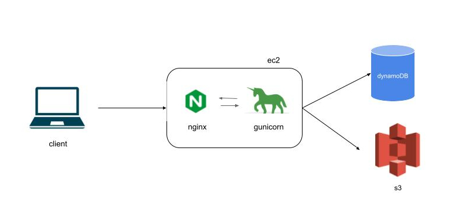

intro
When I told my friend Lily that I had to travel to Europe for work, she ran upstairs,
grabbed her scarf, put on her sunglasses, and smacked her lips together after painting them a bright shade of red.
"When are we leaving? How far is the Eiffel Tower from your office?" she asked excitedly.
Oh, the disappointment on her face when I told her I would be spending a few weeks in the Balkans —
nowhere near Paris or London!
Hugged by the Sava and Danube rivers, Belgrade's old city sits atop
a beautiful, steep hill. Throughout history, Beograd (Belgrade in Serbian)
was razed to the ground and rebuilt
about 40 times, and reminders of its rough past are visible everywhere.
It is a city where past and present coexist in a strange flow,
and elegant, pristine Austrian-inspired
buildings clash with the cold and rigid geometries of brutalist architecture.
Beograd definitely left a mark on me. It is difficult to become friends with her.
Smiles are rare but hospitality is as abudant as rakija and ćevapi (their staple brandy and
meat dishes).
I wanted to capture the quirkiness of the city in a different way
and so I decided to build a full-stack project called
travel pictures, a collection
of the most significant photos I took during my stay. Paired with personalized captions and emojis, I hope to give a small tribute
to a widely underrated city and give a little cheer to the friendships I made along the way.
technical details
The
travel pictures is a full-stack web app fully hosted on aws. It is composed of:
•
backend: flask + gunicorn running on an AWS EC2 instance
•
frontend: react + css
•
storage: s3 for pictures, dynamoDB for reaction counts and photo captions
•
proxy & routing: nginx handles both static file serving and API proxying.
The diagram below shows the design of the overall architecture:

A client request goes through the following steps:
1. nginx first receives the request and immediately renders the static page
2. as the page loads, nginx proxies the request to the gunicorn/flask app
3. gunicorn queries dynamoDB and s3 to retrieve the travel pictures, reaction counts and captions
4. the landing page is finally populated with the personalized pictures.
data models in dynamoDB
If you are unfamiliar with dynamoDB, here is a quick summary of its main components:
• data is organized in
tables, a collection of
items which are composed of
attributes.
• dynamoDB is
schemaless, meaning that there is no need to specify the data type like in a traditional relational database.
• dynamoDB supports
primary keys.
There are two types of primary keys in dynamoDB:
•
partition key which uniquely identifies each item in the table.
• composite key of
partition + sort key where each combination of pk + sk must be unique.
In the travel project I used a
composite key model where:
• the
partition key identifies a primary resource of a trip to be stored or displayed. For example, a photo or a written memory are unique records that
are good candidates for a partition key.
• I then used the
sort key to identify which trip the item belongs to. I used the city's name as an identifier.
Dates or years of when the trip was taken are also good options to
uniquely identify an item and its associated trip.
Here is an example of how data is stored in my dynamoDB travels table:
| photo |
beograd:001 |
river |
danube waltz |
3 |
| memory |
barcelona:909 |
sagrada |
breathtaking |
88 |
I designed the dynamoDB table with flexibility and scalability in mind.
By using a schema-less design, I can easily add new attributes — such as tags, location,
or other photo metadata — without modifying the table structure.
In a traditional relational database, introducing new attributes
often requires multiple migrations or even creating additional tables.
DynamoDB's flexible item model allows me to extend the schema incrementally,
making it straightforward to support new features and evolving requirements.
next steps
To consider in future releases:
• https vs http
• replace ip address with a domain
• add firewall, api gateway
• logging
• unit tests 🙈
final thoughts
I hope you enjoyed the
travels project as much as I did when building and piecing together each component.
I always welcome constructive feedback and if there is anything that stood out or, if you would simply like to say hi, drop me a line at
luisa.pegoraro@gmail.com. Until next time.
živeli · enjoy